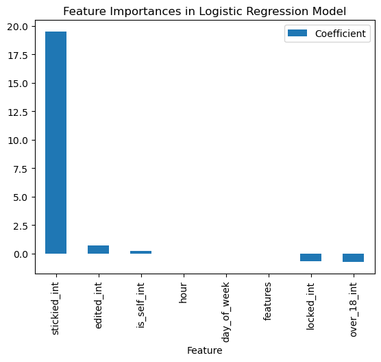
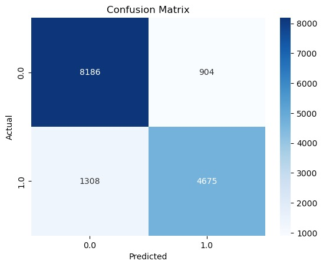
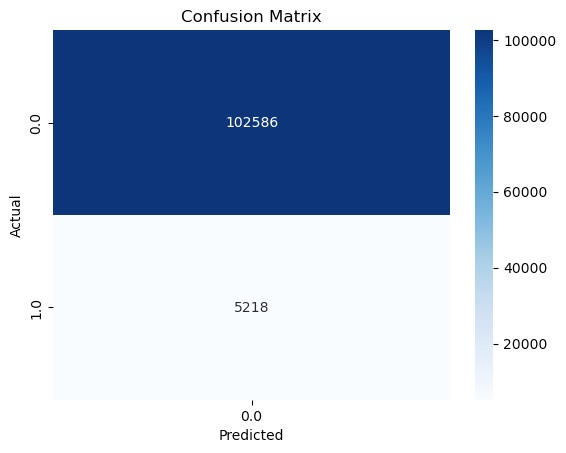
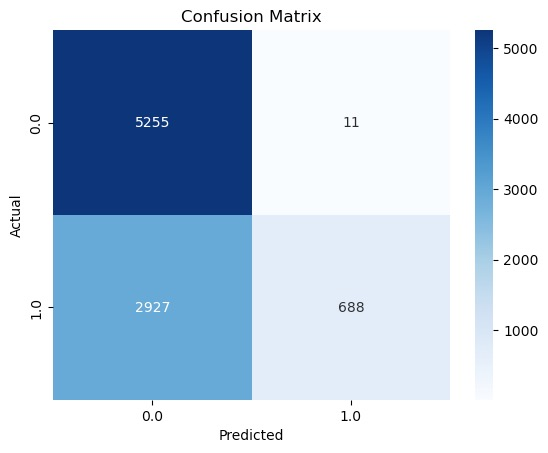

ML
Note:Link to the source code - 1
Note:Link to the source code - 2
Note:Link to the source code - 3
Executive Summary
Our Machine Learning (ML) initiatives within the "iPhone" subreddit aim to enhance user experience, content organization, and community engagement. In ML_1, our business goal revolves around predicting the level of topic engagement for posts. With a machine learning model for classification, we forecast whether an input post is likely to become a highly discussed topic, contributing to a more insightful and engaging community.
In ML_2, our objective is to create an automated system for accurate content classification within the "iPhone" subreddit. This classification system enhances content organization, providing users with a more streamlined and relevant experience.
ML_3 focuses on the business goal of determining whether a comment will be stickied. Through NLP model utilization to extract key information and features from comments, we train a machine learning model using relevant data such as score and controversiality. The model predicts the likelihood of a comment being stickied, streamlining moderation efforts and contributing to an organized and well-maintained community.
ML 1
Analysis:
The prediction results of logistic regression model is 0.7731365159128978. The following is the impact index of different attributes on post popularity in the logistic regression
Model:
| Name of Parameters | Value |
|---|---|
| stickied_int | 19.48034014033475 |
| edited_int | 0.739907124805156 |
| is_self_int | 0.2168240866027578 |
| hour | 0.009130504845957588 |
| day_of_week | -0.005687518937613438 |
| features | -0.029843402129460316 |
| locked_int | -0.6851923857361955 |
| over_18_int | -0.7377361318639629 |
stickied_int (19.4803): There is a significant positive correlation between a post being stickied and its popularity. This feature has the highest coefficient, suggesting that once a post is stickied, it is highly likely to achieve greater popularity.
edited_int (0.7399) and is_self_int (0.2168): Whether a post has been edited (edited) and whether it is original content (is_self) also positively correlate with popularity. Although their impact is not as pronounced as that of stickied posts, they still indicate a positive role of editing and original content in enhancing a post’s popularity.
hour (0.0091), day_of_week (-0.0057), and features (-0.0298): The timing of the post (hour and day of the week) and the TF-IDF score of the text content have only minor impacts on a post’s popularity. These factors may play some role but are not decisive in determining whether a post becomes popular.
locked_int (-0.6852) and over_18_int (-0.7377): Whether a post is locked (locked) and whether it contains adult content (over_18) show a negative correlation with popularity. This suggests that posts that are locked and those with adult content tend to be less popular, possibly due to their limited visibility and acceptability.
ML 2
Analysis:
In the ML 2 task, we attempted to construct a model for accurately classifying whether a submission belongs to the "iPhone" subreddit or not. We made this determination based on the "self-text" and "title" of submission posts. Initially, we read the parquet file of the "iPhone" subreddit and the "non-iPhone" subreddit, changing the content of the "subreddit" column in the non-iPhone subreddit to "not iphone" as the label (iphone vs. not iphone). These labels will be used during the subsequent model training. We then united the two subreddits to create the final dataframe to be used. Next, we tokenized the "selftext" and "title" columns, used Word2Vec to generate features, and created a pipeline. By fitting the model, we transformed the "title" and "selftext" columns into "features_title" and "features_selftext". Subsequently, we utilized VectorAssembler to merge the generated features into a single feature vector ('combined_features'). This process represents the feature processing steps. Moving on to the label, we applied StringIndexer to encode the "subreddit" column into numerical labels ('label'). These labels were then combined with the features. After splitting the data generated through the above processes into training and testing subsets, we created a classification model. Using the 'combined_features' in the data, we classified it with a Random Forest Classifier. We opted for the Random Forests Algorithm for the classification task as it is known for generally providing high Accuracy and balancing the bias-variance trade-off effectively. Finally, we evaluated our ML2 model using Accuracy, confusion matrix, F1 score, and R-squared score.
Test Results:
| Measurement | Value | |
|---|---|---|
| 0 | Accuracy | 0.8532 |
| 1 | Test Error | 0.1468 |
| 2 | F1 Score | 0.8523 |
| 3 | R2 Score | 0.3870 |
Based on the above test results, our model seems to be performing reasonably well, demonstrating a high Accuracy and a relatively balanced F1 score (a large F1 score). Additionally, the confusion matrix provides a more detailed breakdown of the model's performance on each class (TP, TN, FP, FN). Although the R-squared score is approximately 0.3869, suggesting that the model explains about 38.69% of the variance in the target variable, ML 2 is actually a classification task, not a regression task. Therefore, it is more suitable to use Accuracy, the Confusion Matrix, and the F1 score in our case. The R-squared score might not be the most appropriate metric to evaluate our model since the R-squared score is more relevant for regression tasks. It's not uncommon to have a high Accuracy and F1 score but a lower R-squared score, especially if the focus is on classification Accuracy rather than predicting a continuous variable. Therefore, based on our results, the Accuracy of our model’s performance in classification is around 85.32%.
ML 3
Analysis:
In ML 3 task, we aimed to construct a model for predicting whether a comment would be stickied. To achieve this, we utilized scores for sentiment, score, controversiality, and comment type (topic) obtained from the previous NLP 3 comment dataset. Hence, we first read the parquet file from NLP 3 (ml4_related_comments.parquet) and extracted the "sentiment" for each comment. These parquet files already contained data for columns "controversiality," "gilded," "body," "score," "stickied," and "topic," where "topic" represents our custom-defined topics—five categories in total (chip, screen, other, camera, and storage). These topics were of particular interest in our iPhone subreddit dataset. Next, we preprocessed this data. For "score", scores less than 0 were labeled as low, scores equal to 0 were labeled as medium, and scores greater than 0 were labeled as high. For "controversiality", a value of 0 was marked as False, and a value of 1 was marked as True. Additionally, we converted the "stickied" column from boolean to string. Subsequently, we selected the portion of the "sentiment" column that was positive or negative, dropping any empty or NA values. Following this, we split the dataset into training, testing, and validation subsets. Moving on to label processing, we used StringIndexer to convert categorical columns ("stickied", "topic", "sentiment", "score_category", "controversiality_category") into numerical indices, assigning unique indices to each category. We then transformed some indices ("topic" and "score_category") into binary vectors using OneHotEncoder. Next, we assembled these features into a single vector ('features') using VectorAssembler, creating a feature vector suitable for machine learning models. Subsequently, we created a classification model using "stickied_result" as labels and "features" as features, employing a Random Forest Classifier for classification. After classification, we reverted the numerical predictions back to the original labels using IndexToString. Finally, we evaluated our ML 3 model using Accuracy, Confusion Matrix, F1 score, and R-squared score. However, since ML 3 task is also a classification task, the R-squared score is only for reference and is not analyzed.
Test Results - For the First Model:
| Measurement | Value | |
|---|---|---|
| 0 | Accuracy | 0.951597 |
| 1 | Test Error | 0.0484027 |
| 2 | F1 Score | 0.9279962456630151 |
| 3 | R2 Score | -0.05086464039927496 |
The above is the results of our first model. However, this model has a problem—it only predicts results as false. Because the majority of comments are not stickied, the Accuracy is very high (0.9516) and F1 score is also very high (0.928). The reason for this issue may be that stickied comments constitute a very small proportion of the overall dataset. There are 28,866 stickied comments, whereas there are 570,806 comments that are not stickied.
| Stickied | Count |
|---|---|
| False | 570806 |
| True | 28866 |
Therefore, we created a new dataset that includes all 28,866 stickied comments and randomly selected 20,000 non-stickied comments from the overall dataset. In our second model, trained on this refined dataset, the accuracy is not as high as the first model (just 0.6692), but the model's output is more reasonable. Therefore, for our ML 3 task, we present the performance of this model in the end.
| Stickied | Count |
|---|---|
| False | 20000 |
| True | 28866 |
Test Results - For the Second(Final) Model:
| Measurement | Value | |
|---|---|---|
| 0 | Accuracy | 0.669181 |
| 1 | Test Error | 0.330819 |